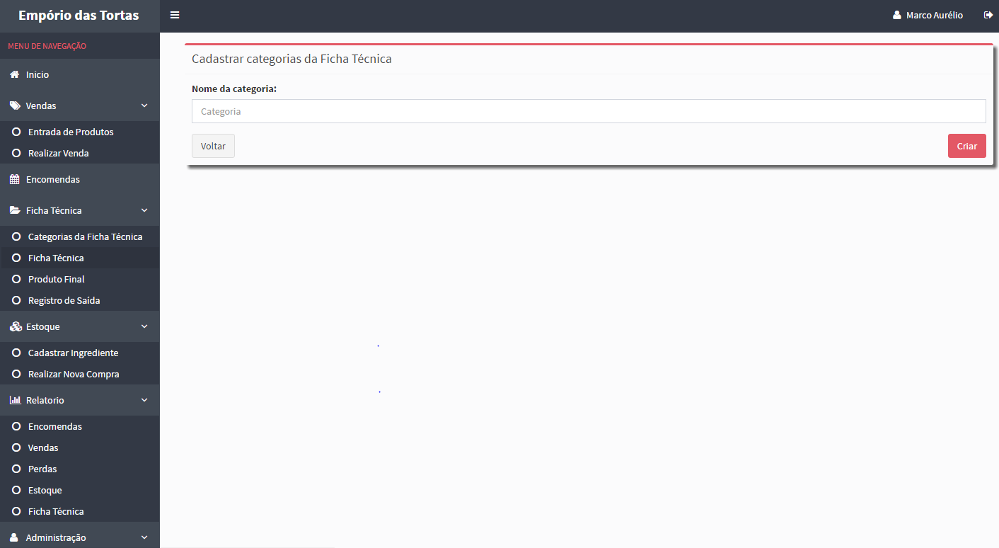
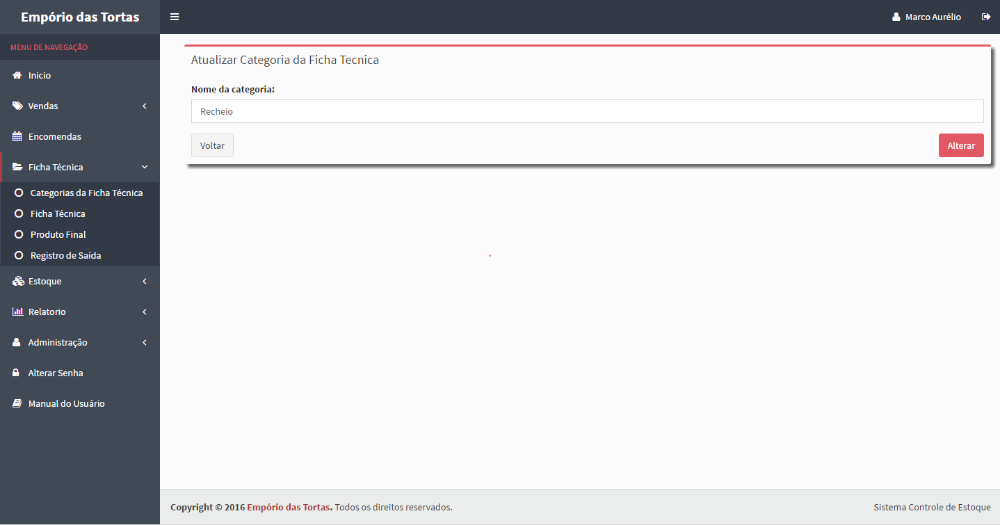
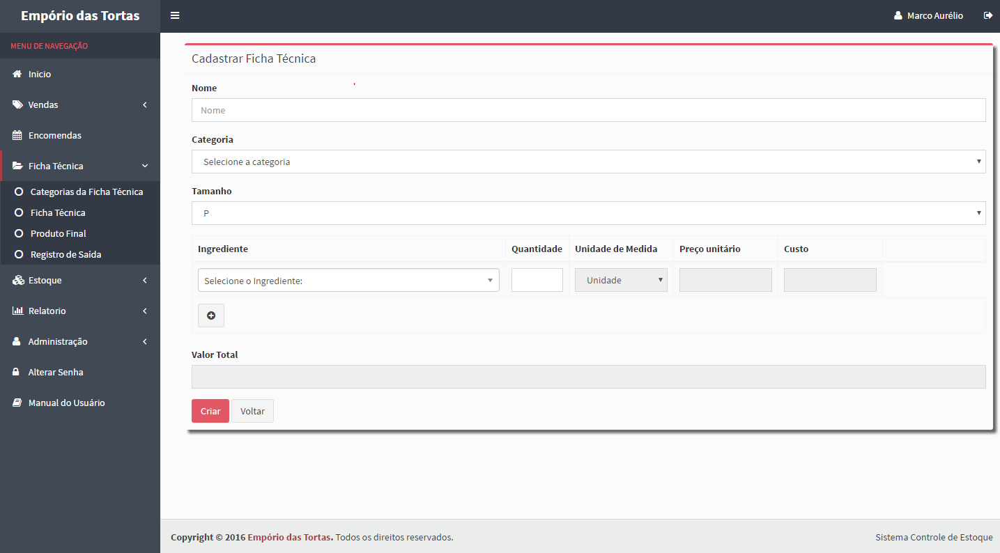
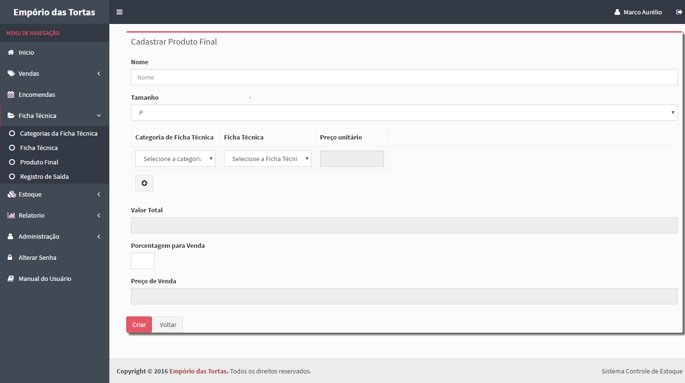
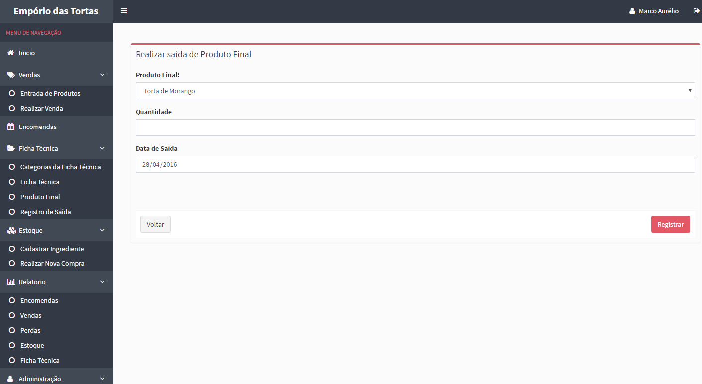

No menu de Ficha Técnica existem quatro opções.
A primeira é a Categoria da Ficha Técnica, nessa tela será exibido as categorias da Ficha Técnica
que serão cadastradas para o produto final. Ela possuirá 3 ações: Visualizar,Atualizar e Apagar.

Clicando em Novo você cadastrará uma categoria da Ficha Técnica

Para atualizar a Categoria da Ficha Tecnica, clique no botão "Alterar" e altere o nome da categoria.

A Segunda opção será a Ficha Técnica. Na tela de Cadastrar Nova Ficha Técnica terá os respectivos campos
para serem preenchidos, para adicionar mais de um ingrediente é só clicar no botão "+" abaixo do campo de igrediente.

Na terceira opção se encontra o Produto Final,clicando no botão "Novo" irá para a tela de Cadastrar Novo Produto Final
que é bem semelhante a tela de Ficha Técnica,a diferença será que aqui como o próprio nome diz,ficará os produtos
finais ex: torta de morango.

Na quarta e última opção é onde se encontra o Registro de saída de Ficha Técnica, onde o mesmo será enviado para o setor de vendas.

Created with the Personal Edition of HelpNDoc: Easily create iPhone documentation